Beuzeville-La-Grenier Téléthon 2008

Téléthon 2008. Le Cerf-Volant club de Dieppe y participe, à Beuzeville-La-Grenier et m'a invité. Beuzeville, c'est au sud de Fécamp, mais au nord de la Seine. Il y a... 1000 habitants, pourtant c'est une des 13 Villes Ambassadrices du Téléthon en raison de son enthousiasme aux versions précédentes !

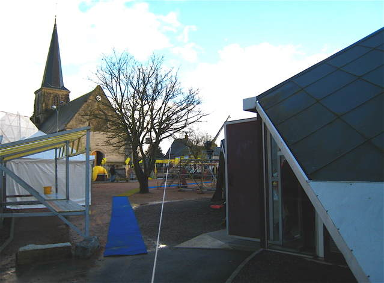
J'arrive vendredi après-midi sur la place. Voici le terrain de décollage, d'où je fais partir mon Rokkaku... Mais il est mouillé et sa toile est très détendue (avec les années, aussi) et il est trop peu stable...

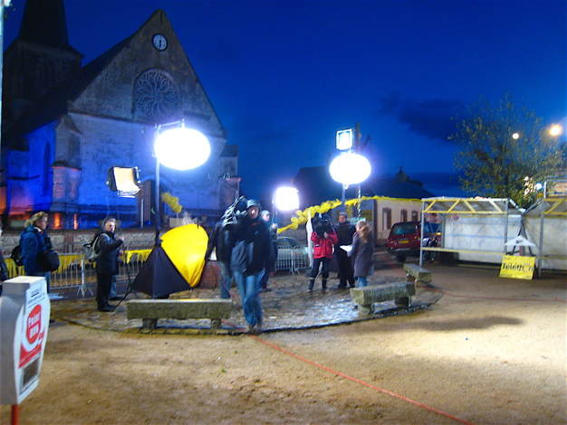
La télé (FR3) est là aussi avec un caravansérail de voitures, de camionnettes, de cadreurs et de câbles pour la video ou l'éclairage... Ce dernier est super, quand on le coupe, on a l'impression d'être dans le noir !

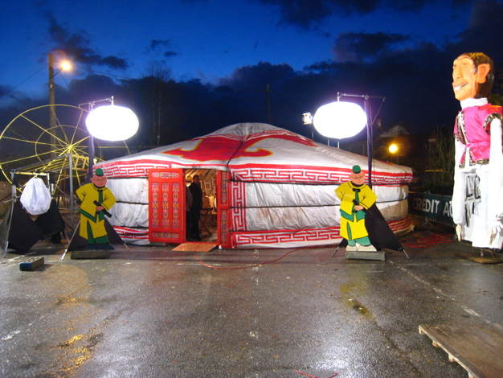
Le thème, c'est la Chine. Une iourte mongole (donc chinoise...) a été montée. On peut y dormir si on veut, c'est chauffé...

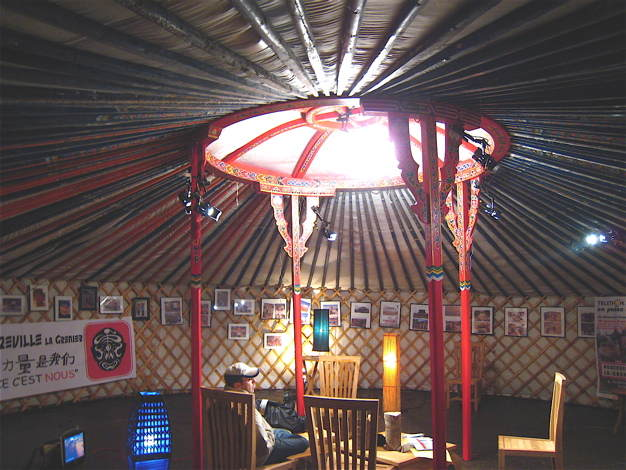
Dedans une expo de photos d'un voyage en Chine et des meubles et sculptures en bois...

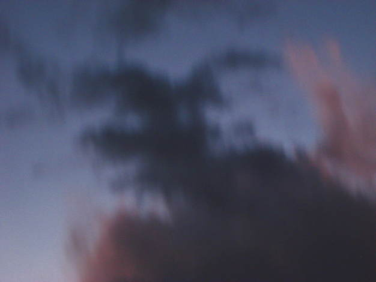
Le ciel marque sa participation avec cet énorme dragon chinois aux cornes impressionnantes ! Je ferai voler mon Albatros 30 mn, mais au stade, trop loin pour le Téléthon. Un essai de décollage dans la manif (voir la zone en 1ere photo) s'est soldé par deux chutes immédiates dans les tourbillons, je renonce...

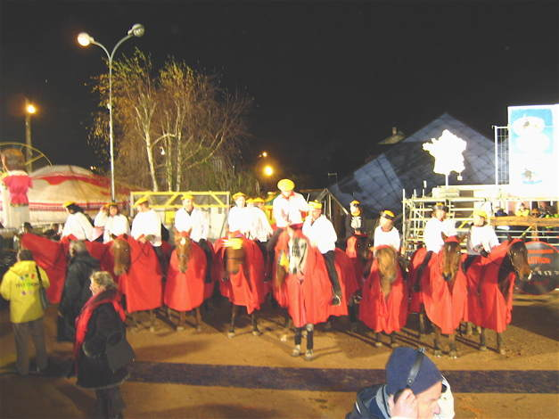
Les chevaux feront une petite ballade dans leur splendide caparaçon et se présenteront en spectacle au stade demain !

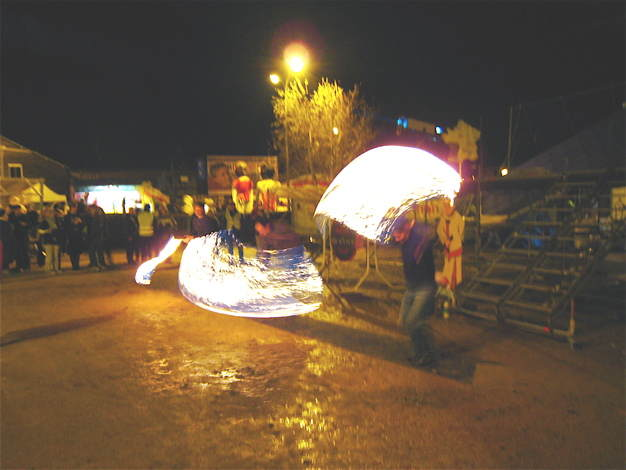
Trois jongleurs font tournoyer des cordes à sauter un peu spéciales, dont le milieu brûle !

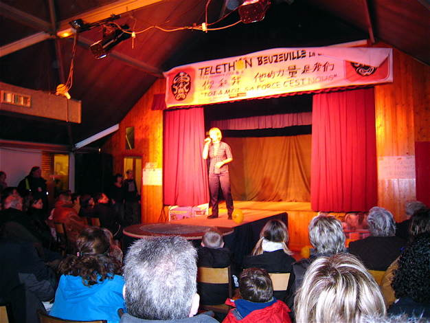
Dans la salle, au soir, un spectacle varié, avec de jeunes danseuses-chanteuses (moins de 16 ans...) The Sweet Lady Night passionnées et enthousiasmantes d'entrain !

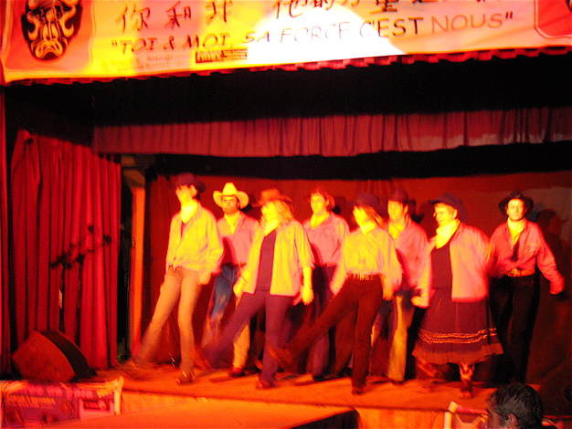
Les spécialistes de la Country Dance n'ont pas voulu danser sous la pluie et présenteront leur savoir dans la salle...

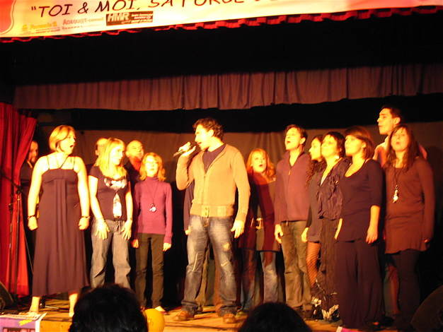
Michel Cerroni (Gringoire dans Notre-Dame-de-Paris) est le coach de tout le groupe de chanteurs de La Ruche. Il chantera aussi remarquablement Le Temps des Cathédrales entre autres, évidemment.

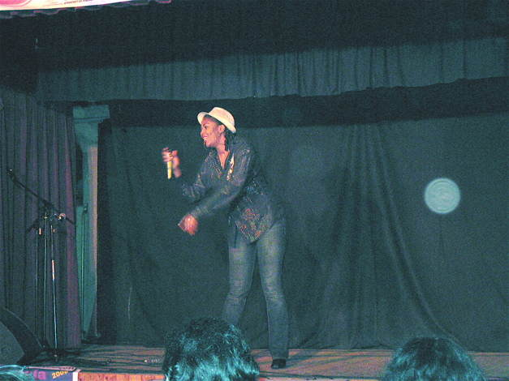
Jane Fostin ex-chanteuse de Zouk Machine de 1988 à 1994 est venue des Antilles spécialement pour le Téléthon et chantera toute la seconde partie... Mais je ne suis pas resté longtemps, mes oreilles ne supportent pas la sono aux décibels de boîte de nuit...

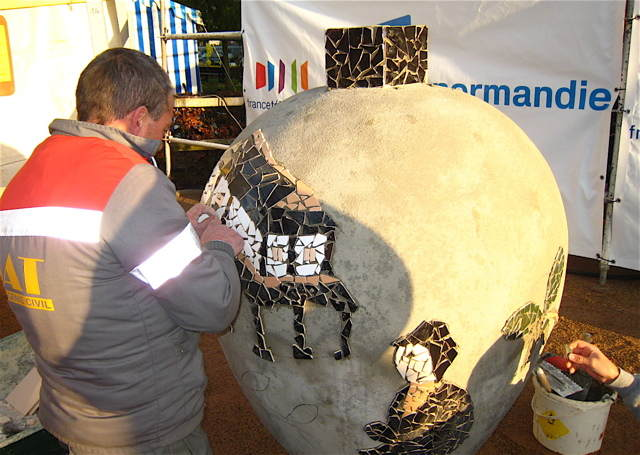
Samedi matin, les défis commencent ou continuent... Ce vase chinois devrait être entièrement mosaïqué d'ici ce soir... José a l'air confiant, mais il y a de la surface !

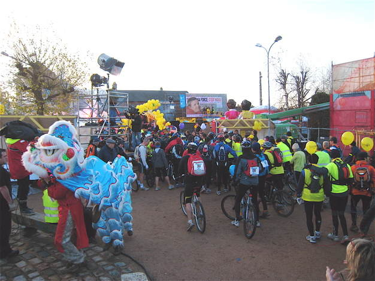
Des VTT et des marathoniens prendront le départ pour quelques heures de course : un trail VTT, un marathon de 41 km et, incroyable... un double-marathon de 82 km !

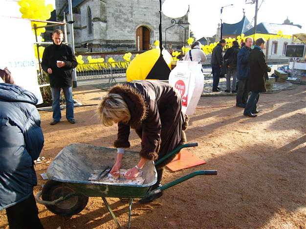
Des volontaires donneront un coup de main pour le vase, dont cette dame en pelisse fourrée pas très adaptée au chantier !

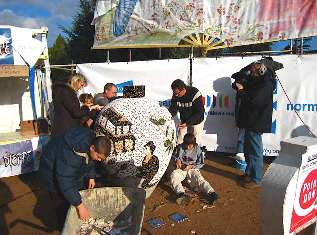
Grâce à cette main-d'oeuvre volontaire, on a maintenant un vase chinois bien avancé...

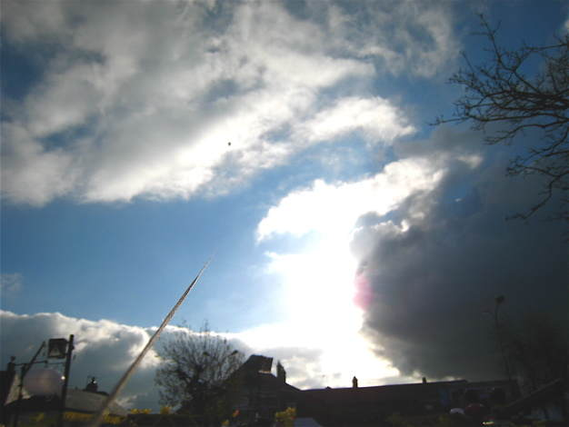
Au matin, j'ai bricolé pour rallonger les vergues de mon Rokkaku et retendre la toile ! Il vole beaucoup mieux ainsi... tant qu'il y aura du vent, jusque vers 12 h 30... D'autres volent sur le stade, assez hauts pour être vus...

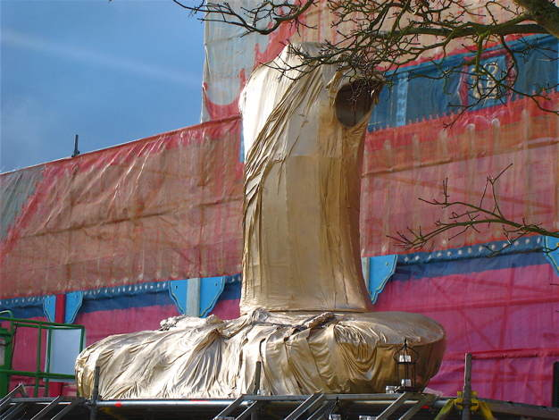
A mesure des achats de photophores, le Bouddha se monte, déjà les jambes et le buste !

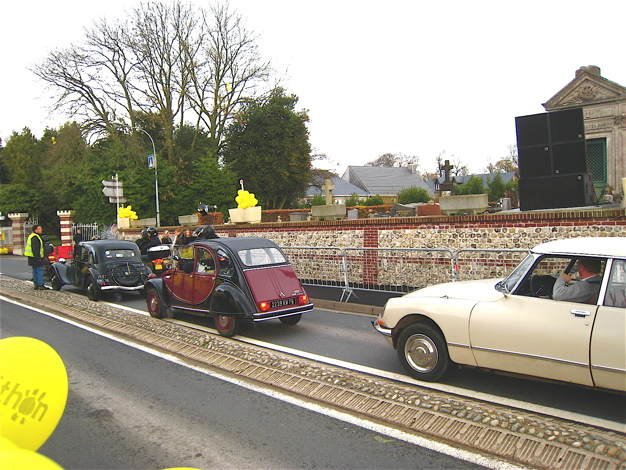
Devant la place, un convoi de véhicules anciens passe dans un concert de Klaxons : Traction, 2CV Charleston, DS...

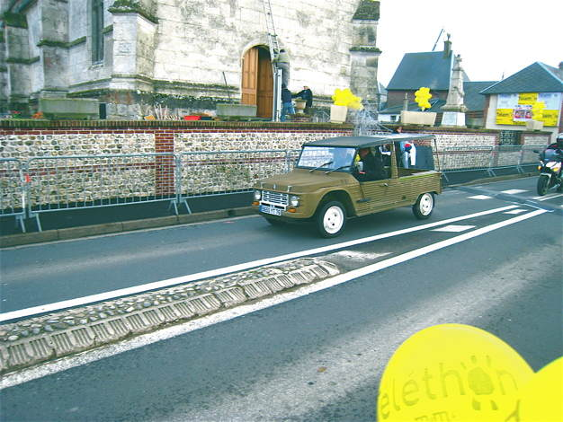
Et aussi une Méhari, voiture géniale (j'en témoigne, j'en ai eu une en Provence) sur une base de 2 CV...

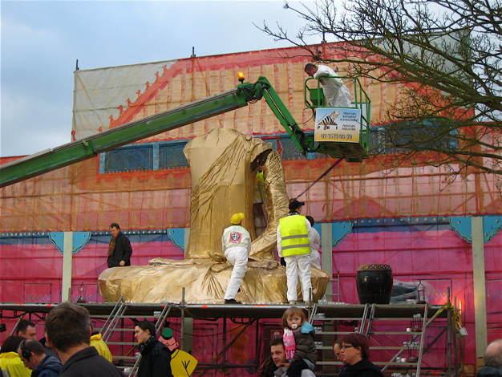
Encore des dizaines de photophores achetés, le Bouddha hérite d'un bras supplémentaire...

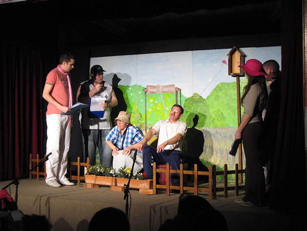
Dans la salle, deux pièces de théâtre normandes jouées par des amateurs locaux...

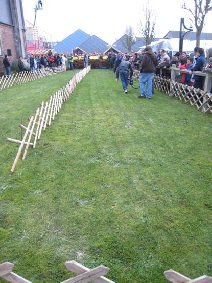
Le cochonodrome est monté dans le jardin du presbytère ! La course partira quand suffisamment de parieurs auront misé, mais le présentateur avertit que la course est entièrement truquée et que personne ne gagnera !

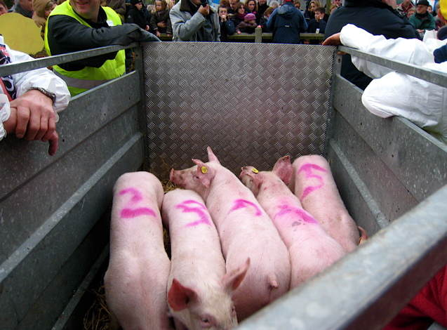
Les concurrents sont arrivés au paddock... Ils portent leurs dossards, mais le gagnant sera un non-partant (!) et personne ne gagnera, évidemment. Mais le départ traîne, il faut provoquer les parieurs, je n'ai pas attendu la course et je n'ai pas d'images.

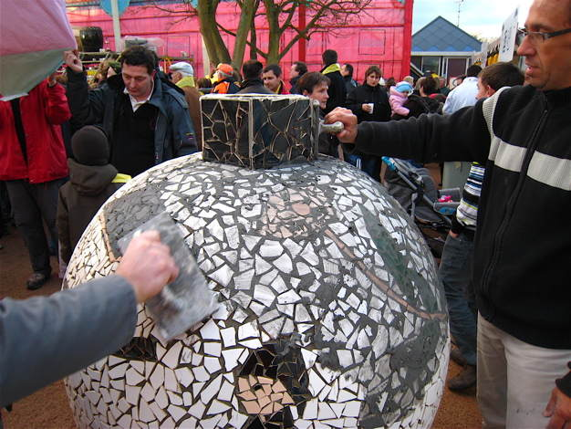
Le vase chinois a été terminé, mais il reste à remplir les joints ! Les spécialistes reprennent la main, il faut les outils nécessaires et le savoir-faire...

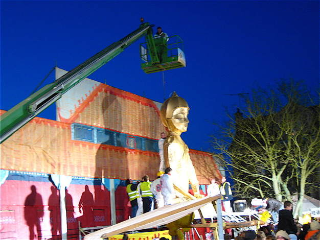
La nuit arrive, mais le Bouddha a pu être financé. Avec des moyens solides, on pose la tête, bien réussie !

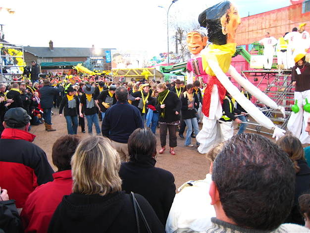
Les danseurs de country feront toute la journée des initiations : il s'agit de battre au niveau national le record du nombre de danseurs simultanés entre 17 h et 17 h 30 !

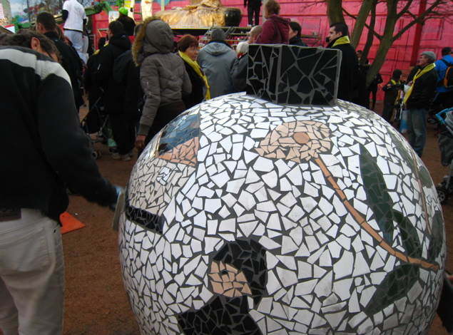
Le vase est fini, il brille et il paraît qu'il est devenu indestructible: le précédent est dans un square et a vécu 5 ans sans problèmes !

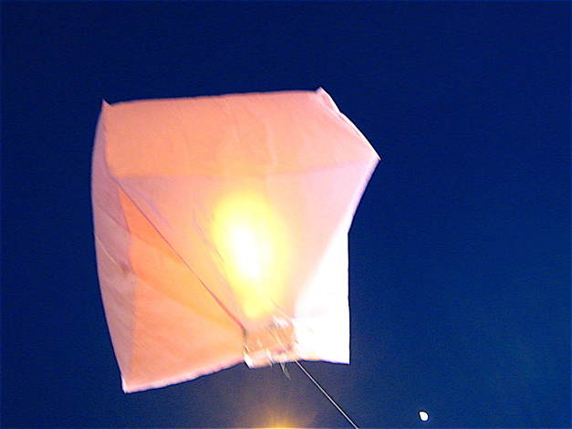
Olivier Lejosne et son fils (4 ans, un passionné !) ont amené des montgolfières papier et les lancent, d'abord une petite pour vérifier la trajectoire entre les maisons et l'église !

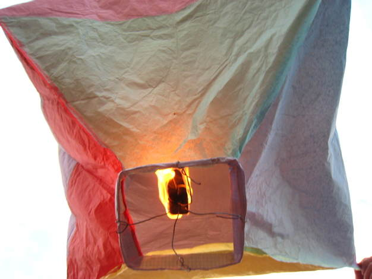
Et puis une plus grosse, marquée du logo Téléthon. Le brûleur est allumé : c'est un bloc de papier essuie-tout imprégné de paraffine et compressé.

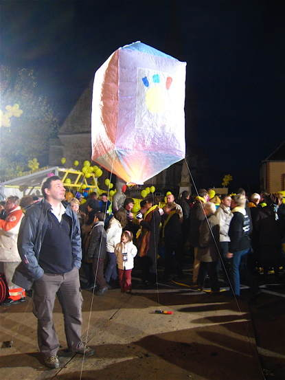
Le brûleur tient 20 mn. Alors, pour faire durer le plaisir, on la fait d'abord voler captive... Puis on la lâchera, et on la verra voler longtemps et disparaître au loin, très loin...

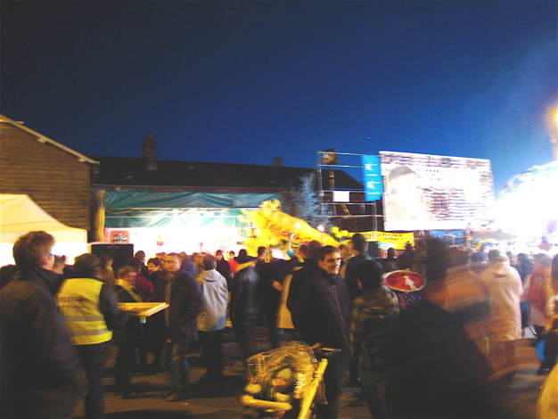
Il y a beaucoup de monde ! Au fond, la scène extérieure. A droite une grande affiche qui devra être couverte de photos des contributeurs !

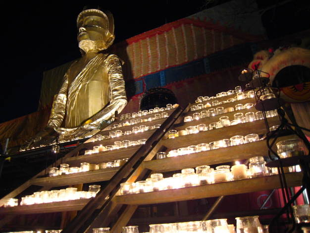
Le Bouddha fini, la nuit tombée, on a allumé les photophores sur les marches des escaliers, c'est splendide !

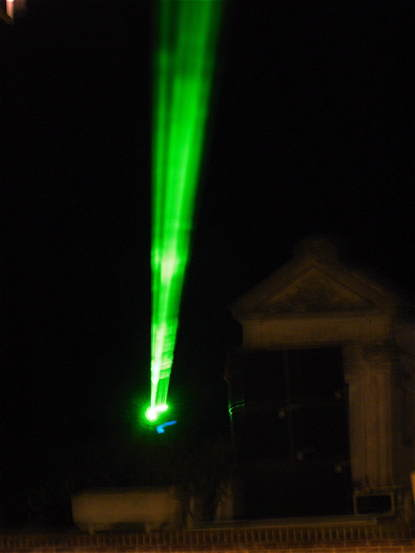
A 150 m, les projecteurs laser ont été allumés et dessinent des figures variées, dont les yeux et la bouche du Bouddha ! On voit même les impacts sur les nuages à 1 km !

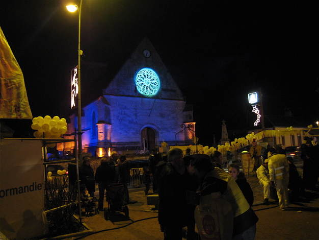
Et l'église servira de point d'appui pour les jeux de lumière et le feu d'artifice. La Poursuite illumine déjà sa rosace ! Tous les participants de la Force T (l'équipe de préparation-réalisation) en sortent successivement à l'appel de leurs prénoms, juste mise en valeur !

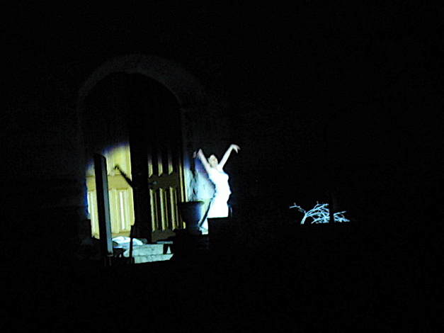
Puis une danseuse, soulignée par la poursuite dans la nuit noire, animera le parvis.

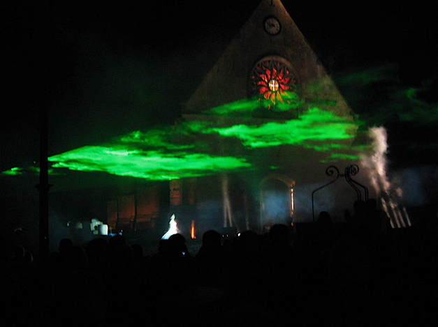
Le laser lui fait tantôt une arche, tantôt un dais, projetés sur les fumées des générateurs...

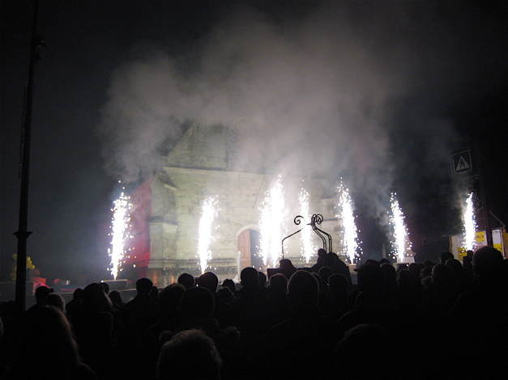
Et le feu d'artifice est lancé, réalisé par une équipe de Gruchet-Le-Valasse (2757 h) !

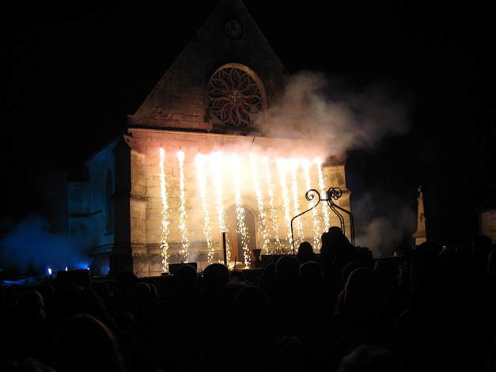
Après les jets montants, les fontaines lumineuses !

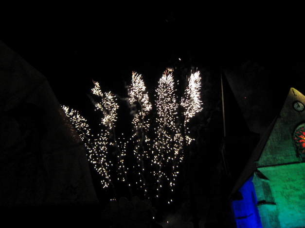
Et enfin les fusées, pour un feu beaucoup plus somptueux que ma maigre photo, avec musique, laser et fumées !

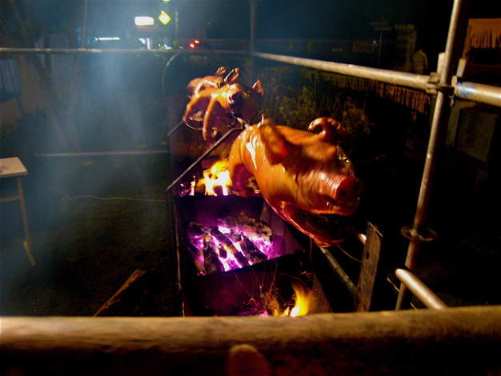
Les cochons classés derniers sont en enfer ! Mais non, ce sont d'autres, qui grillent depuis 4 heures pour le repas de clôture de ce soir...

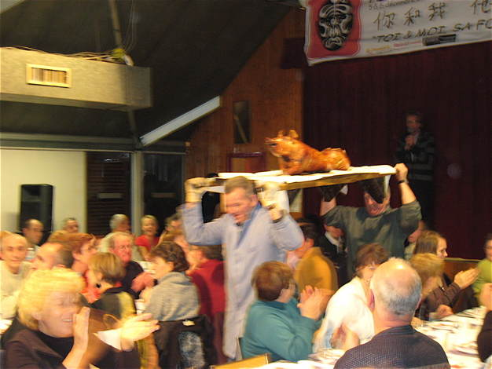
Avant la découpe, le plus beau cochon a droit à un petit tour de salle sous les applaudissements des convives qui bavent déjà en pensant à lui. Les applaudissements vont aussi aux cuisiniers, évidemment !

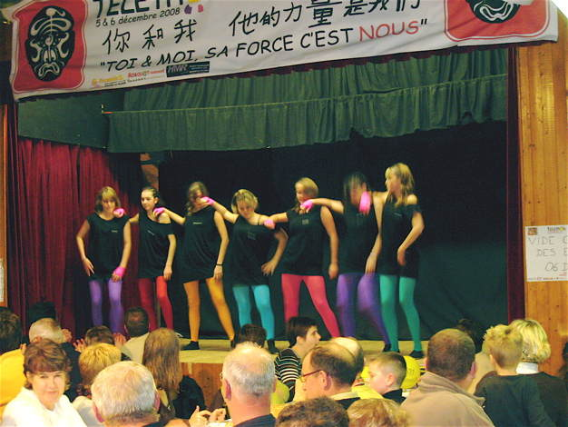
Les Sweet Lady Night se produiront encore sur scène avec une énergie décuplée, pour notre plus grand plaisir... malgré une sono qui ne peut pas jouer les disques des chanteuses !

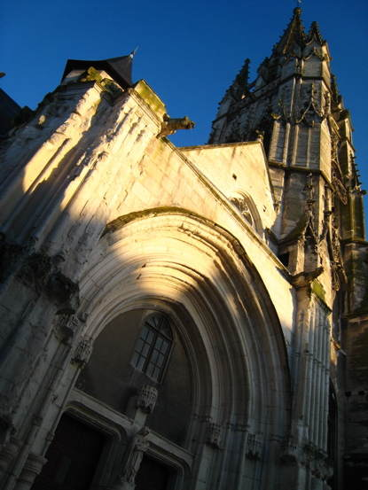
Cette nuit, dodo dans la camionnette. Au matin, elle est couverte de verglas et je n'ai plus de gaz ! Je change la bouteille, mais il faut sortir... Et puis je rentre par le chemin des écoliers : Lillebonne, Notre-Dame et le forum.

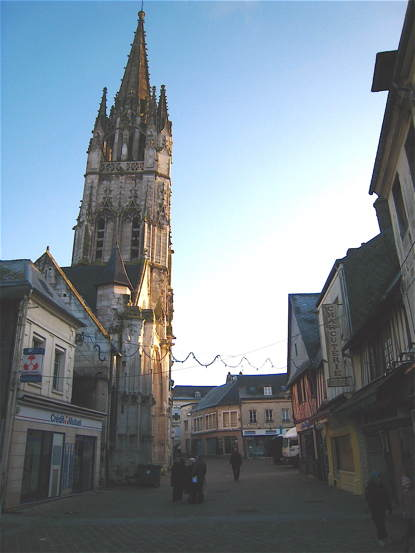
Notre-Dame est dans le centre piétonnier, avec de jolies maisons à colombage !

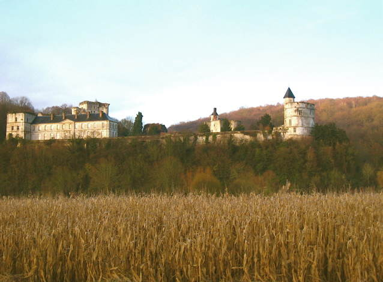
Je vais vers le Pont de Tancarville et son magnifique château, mais je ne passerai pas le pont, je remonterai la Seine sur la rive droite...

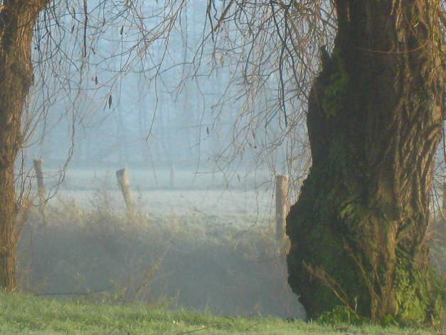
Les rives de Seine sont dans un brouillard qui ne se dissipera pas de la journée! Mais le bord du marais est très pittoresque et calme avec ses saules et ses roubines... Un pivert m'observe tranquillement...

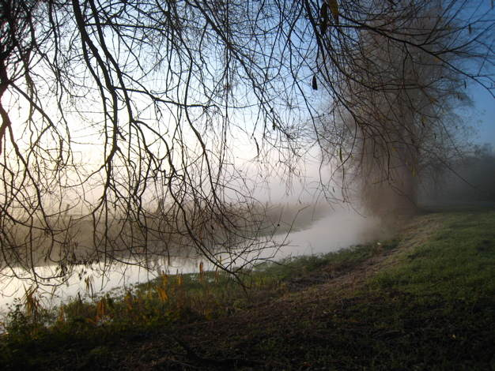
Avec le ciel clair et le soleil, le brouillard continue à monter des zones humides... Même au soleil, il fait encore froid, je remonte vite dans le camion direction : la maison...
Beuzeville-La-Grenier : Un petit village "Ville Ambassadrice" qui se donne à fond pour le Téléthon, record encore battu cette année avec près de 20 000 Euros recueillis... C'est la première fois qu'il y avait des cervolistes, mais la relation n'est pas directe, nous n'avons pas beaucoup pu voler... A une autre fois, peut-être !